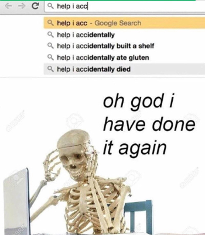

Hvað er spooktober
"The month of October, and the best time of the year. When all memes become Halloween-themed and everything is full of skeletons and spooks."

Halloween’s origins date back to the ancient Celtic festival of Samhain (pronounced sow-in). The Celts, who lived 2,000 years ago in the area that is now Ireland, the United Kingdom and northern France, celebrated their new year on November 1. This day marked the end of summer and the harvest and the beginning of the dark, cold winter, a time of year that was often associated with human death. Celts believed that on the night before the new year, the boundary between the worlds of the living and the dead became blurred. On the night of October 31 they celebrated Samhain, when it was believed that the ghosts of the dead returned to earth. In addition to causing trouble and damaging crops, Celts thought that the presence of the otherworldly spirits made it easier for the Druids, or Celtic priests, to make predictions about the future. For a people entirely dependent on the volatile natural world, these prophecies were an important source of comfort and direction during the long, dark winter. To commemorate the event, Druids built huge sacred bonfires, where the people gathered to burn crops and animals as sacrifices to the Celtic deities. During the celebration, the Celts wore costumes, typically consisting of animal heads and skins, and attempted to tell each other’s fortunes. When the celebration was over, they re-lit their hearth fires, which they had extinguished earlier that evening, from the sacred bonfire to help protect them during the coming winter.